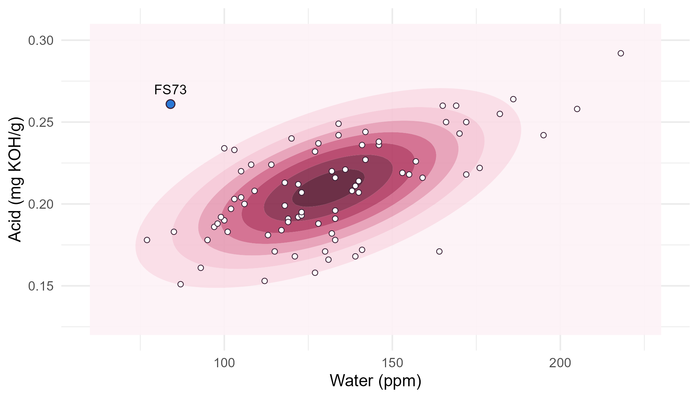
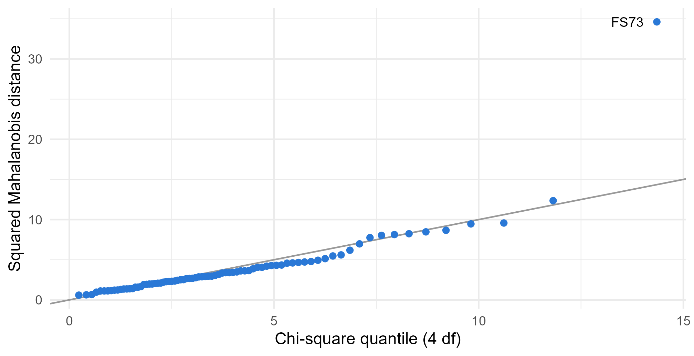

Module 3 · Lesson 3 of 13 Week 49 of 160 About 5–7 hours
The multivariate normal distribution
The bell curve in several dimensions: its shape, its slices, and how to check for it
Meet the multivariate normal density and its elliptical contours, use its key properties (normal margins, normal linear combinations, chi-square distances), derive conditional distributions and see that they’re regressions, and check multivariate normality with chi-square Q-Q plots and Mardia’s tests.
The normal distribution is the foundation of the t-tests, intervals and regressions of Modules 0 to 2. Its multivariate version plays the same role for this module: Hotelling’s T^2, MANOVA and discriminant analysis are all built on it. This lesson introduces the multivariate normal distribution, shows the properties that make it so convenient, and, just as important, shows how to check whether your data are anywhere near it.
The bell curve, but make it 3D! Picture a smooth hill whose contour lines are the ellipses from last lesson. Its slices hold a surprise: they’re regressions in disguise.
In this lesson you’ll:
- meet the multivariate normal density, and see how it’s built from the Mahalanobis distance
- use its properties: normal margins, normal linear combinations, chi-square distances
- simulate multivariate normal data
- find conditional distributions, and see that they’re regressions
- check multivariate normality with a chi-square Q-Q plot and Mardia’s tests
The density
A random vector \mathbf{X} with p components has a multivariate normal distribution, N_p(\boldsymbol\mu, \Sigma), when its density is
f(\mathbf{x}) = \frac{1}{(2\pi)^{p/2}\,|\Sigma|^{1/2}} \exp\!\left( -\tfrac12 (\mathbf{x} - \boldsymbol\mu)^\top \Sigma^{-1} (\mathbf{x} - \boldsymbol\mu) \right).
Compare it with the one-variable normal density, \frac{1}{\sqrt{2\pi}\sigma} \exp\!\left(-\tfrac12 (x - \mu)^2/\sigma^2\right). Everything has its matrix counterpart: the squared z-score becomes the squared Mahalanobis distance, and \sigma becomes |\Sigma|^{1/2}, the square root of the generalized variance. The distribution is completely described by two things, the mean vector \boldsymbol\mu and the covariance matrix \Sigma (Greek letters, because these are the true, population values).
The density depends on \mathbf{x} only through its Mahalanobis distance from \boldsymbol\mu. So all the points at the same distance have the same density: the contours of the hill are exactly last lesson’s ellipses. Here’s the bivariate normal fitted to the batches’ water and acid:
W <- Y[, c("water_ppm", "acid_mgKOH")]
mu <- colMeans(W)
Sigma <- cov(W)
grid <- expand.grid(water_ppm = seq(60, 230, length.out = 120), acid_mgKOH = seq(0.12, 0.31, length.out = 120))
grid$density <- mvtnorm::dmvnorm(as.matrix(grid), mean = mu, sigma = Sigma)
ggplot(grid, aes(x = water_ppm, y = acid_mgKOH)) +
geom_contour_filled(aes(z = density), bins = 8, alpha = 0.9) +
geom_point(data = as.data.frame(W), shape = 21, fill = "white", color = "#3A1F35", size = 1.6, stroke = 0.4) +
geom_point(data = as.data.frame(W)["FS73", ], shape = 21, fill = "#2a78d6", color = "#3A1F35", size = 2.6) +
annotate("text", x = W["FS73", 1], y = W["FS73", 2], label = "FS73", vjust = -1, size = 3.5) +
scale_fill_manual(values = colorRampPalette(c("#FDF2F6", "#F4C0D1", "#C2416C", "#5c1a33"))(8), guide = "none") +
labs(x = "Water (ppm)", y = "Acid (mg KOH/g)") +
theme_minimal(base_size = 12)
The darkest region is the peak, at the mean vector, and the density falls off in elliptical rings. FS73 sits out in the pale area at the top left, at 84 ppm and 0.261 mg KOH/g.
Your turn. Compute the fitted bivariate normal density at FS73’s water and acid, from the formula. Compare it with mvtnorm::dmvnorm().
The quadratic form is \mathbf{d}^\top \Sigma^{-1} \mathbf{d}, so the last factor is d again. With p = 2, (2\pi)^{-p/2} = (2\pi)^{-1}.
mu <- colMeans(W)
Sigma <- cov(W)
d <- W["FS73", ] - mu
by_hand <- (2 * pi)^(-1) * det(Sigma)^(-1/2) * exp(-0.5 * t(d) %*% solve(Sigma) %*% d)
c(by_hand = as.numeric(by_hand), mvtnorm = mvtnorm::dmvnorm(W["FS73", ], mean = mu, sigma = Sigma))Both give 0.00029, against 0.226 at the peak: 0.13% of the peak height, which is e^{-13.3/2}, from FS73’s squared distance of 13.3. (The density’s units are “per ppm per mg KOH/g”, so its size on its own means little. Ratios like this one do.)
What makes it so convenient
If \mathbf{X} \sim N_p(\boldsymbol\mu, \Sigma), then:
- Every linear combination is normal: \mathbf{a}^\top\mathbf{X} \sim N(\mathbf{a}^\top\boldsymbol\mu,\ \mathbf{a}^\top\Sigma\mathbf{a}). That’s Lesson 1’s mean and variance formulas, and the shape is normal too. (In fact, it works the other way round as well: if every linear combination is normal, the vector is multivariate normal.)
- Every subset of the variables is multivariate normal, with the corresponding parts of \boldsymbol\mu and \Sigma. In particular, each variable on its own is normal.
- Zero correlation means independence. For most distributions, uncorrelated variables can still depend on each other in curved ways (remember
cor(x, x^2)from Lesson 0.7). For multivariate normal variables, a zero covariance means they’re completely independent. - Squared Mahalanobis distances are chi-square: (\mathbf{X} - \boldsymbol\mu)^\top\Sigma^{-1}(\mathbf{X} - \boldsymbol\mu) \sim \chi^2_p. That’s last lesson’s yardstick, and it’s exact when \boldsymbol\mu and \Sigma are known.
- Slices are normal too, and they’re the next step.
The converse of property 2 is not true, and it’s a classic trap: every variable can be normal on its own while the vector isn’t multivariate normal. Checking the variables one at a time isn’t enough, which is why this lesson ends with checks that look at all of them together.
To simulate multivariate normal data, use MASS::mvrnorm(n, mu, Sigma). It’s how every dataset in this module was made.
Your turn. Simulate 10,000 batches from a multivariate normal with the same mean vector and covariance matrix as the real ones. What fraction have a squared distance below the 95% point of \chi^2_4?
There are 4 variables, so 4 degrees of freedom.
set.seed(2026)
sim <- MASS::mvrnorm(10000, mu = colMeans(Y), Sigma = cov(Y))
d2 <- mahalanobis(sim, colMeans(Y), cov(Y))
mean(d2 <= qchisq(0.95, df = 4))95.1%, as property 4 promises. You can check property 1 the same way: sd(sim %*% c(-1, 0.0001, 0, 0)) gives 0.368, Lesson 1’s total-impurity standard deviation.
Conditional distributions are regressions
Suppose you know a batch’s water content. What does that tell you about its acid? Split the vector into the part you know, \mathbf{x}_2, and the part you don’t, \mathbf{x}_1, and split the mean and covariance the same way:
\boldsymbol\mu = \begin{pmatrix} \boldsymbol\mu_1 \\ \boldsymbol\mu_2 \end{pmatrix}, \qquad \Sigma = \begin{pmatrix} \Sigma_{11} & \Sigma_{12} \\ \Sigma_{21} & \Sigma_{22} \end{pmatrix} .
For a multivariate normal, the conditional distribution of \mathbf{X}_1 given \mathbf{X}_2 = \mathbf{x}_2 is normal again, with
\text{mean } \boldsymbol\mu_1 + \Sigma_{12}\Sigma_{22}^{-1}(\mathbf{x}_2 - \boldsymbol\mu_2), \qquad \text{covariance } \Sigma_{11} - \Sigma_{12}\Sigma_{22}^{-1}\Sigma_{21} .
Look closely at the mean. It’s a straight line in \mathbf{x}_2, with slope \Sigma_{12}\Sigma_{22}^{-1}: for one predictor, that’s s_{xy}/s_x^2, the least-squares slope from Lesson 2.2! The conditional mean of a multivariate normal is the regression line. And the conditional variance is the residual variance: it’s smaller than the marginal variance \Sigma_{11} (knowing \mathbf{x}_2 helps), and it’s the same whatever value \mathbf{x}_2 takes, which is exactly regression’s equal-variance assumption. When data are multivariate normal, linear regression isn’t an approximation: it’s exactly right.
That gives a sharper look at FS73. Given its water content, 84 ppm, what acid value should it have had?
Your turn. Compute the conditional mean and standard deviation of the acid, given a water content of 84 ppm, with the formulas.
\Sigma_{11} - \Sigma_{12}^2/\Sigma_{22}: divide by the water’s variance, S["water_ppm", "water_ppm"].
mu <- colMeans(W)
S <- cov(W)
cond_mean <- mu["acid_mgKOH"] + S["acid_mgKOH", "water_ppm"] / S["water_ppm", "water_ppm"] * (84 - mu["water_ppm"])
cond_var <- S["acid_mgKOH", "acid_mgKOH"] - S["acid_mgKOH", "water_ppm"]^2 / S["water_ppm", "water_ppm"]
c(mean = unname(cond_mean), sd = sqrt(cond_var))A batch with 84 ppm of water should have an acid value of about 0.181, give or take 0.025. FS73 had 0.261, 3.3 conditional standard deviations too high. The marginal standard deviation of the acid is 0.030, so knowing the water shrinks the uncertainty by about a fifth: the variance shrinks by the factor 1 - r^2 = 0.66. Check the mean against predict(lm(acid_mgKOH ~ water_ppm, data = quality), data.frame(water_ppm = 84)).
Your turn. Now condition on two variables at once: the acid given both FS73’s purity and its water. Use the matrix formulas.
The last factor is \Sigma_{21}: rows i2, column i1.
mu <- colMeans(Y)
S <- cov(Y)
i1 <- 4 # acid
i2 <- c(1, 2) # purity and water
x2 <- Y["FS73", i2]
cond_mean <- mu[i1] + S[i1, i2] %*% solve(S[i2, i2]) %*% (x2 - mu[i2])
cond_var <- S[i1, i1] - S[i1, i2] %*% solve(S[i2, i2]) %*% S[i2, i1]
(Y["FS73", i1] - cond_mean) / sqrt(cond_var)5.5 conditional standard deviations! Given its high purity and its low water, FS73’s acid should have been about 0.165, with a standard deviation of only 0.017. Knowing more makes the prediction sharper, and the anomaly starker. (This is a multiple regression of the acid on the purity and the water, which lm() reproduces exactly.)
Checking multivariate normality
Real data are never exactly multivariate normal. The question is whether they’re close enough for methods that assume it. Check in three ways.
1. Each variable on its own. If any variable is clearly non-normal, the vector can’t be multivariate normal. Q-Q plots and the Shapiro-Wilk test (Lesson 2.8) do the job. Here, the color is right-skewed (as color scales often are), and the water is a little odd too, with p = 0.03.
2. All the variables together: a chi-square Q-Q plot. If the data are multivariate normal, the squared Mahalanobis distances should behave like a sample from \chi^2_p. So sort them, and plot them against the matching chi-square quantiles: the points should fall along the line y = x.
d2 <- mahalanobis(Y, colMeans(Y), cov(Y))
n <- nrow(Y)
tibble(batch = names(sort(d2)), observed = sort(d2), theoretical = qchisq((seq_len(n) - 0.5) / n, df = 4)) |>
ggplot(aes(x = theoretical, y = observed)) +
geom_abline(slope = 1, intercept = 0, color = "grey60") +
geom_point(color = "#2a78d6", size = 1.8) +
annotate("text", x = max(qchisq((seq_len(n) - 0.5) / n, 4)), y = max(d2), label = "FS73", hjust = 1.4, size = 3.5) +
labs(x = "Chi-square quantile (4 df)", y = "Squared Mahalanobis distance") +
theme_minimal(base_size = 12)
Most points follow the line, with one glaring exception: FS73, at 34.6, where the largest of 80 chi-square values would typically be about 14. One point that far from the line says more than any test could.
3. Formal tests. Mardia’s tests measure multivariate skewness and kurtosis. The skewness statistic is near zero for symmetric data and the kurtosis statistic near p(p+2) for normal data. Both come with p-values. The setup code for the exercises defines a small mardia() function that computes them. For the raw data, both reject strongly (skewness p < 10^{-13}, kurtosis z = 6.5). The MVN package offers these and several other tests.
What to do when the data aren’t multivariate normal?
- Look for outliers first. One point like FS73 can wreck every test. Investigate it (Lesson 2.10), and decide what to do with it.
- Transform skewed variables. Logs often fix concentrations and color scales, as here.
- Remember robustness. Tests about means, like the ones in the next three lessons, lean on the central limit theorem, so mild non-normality matters little when n is reasonably large. Outliers matter much more.
- Check the errors, not the raw variables. When a variable depends on something else, like the product’s water on the feed’s water, its raw distribution can be a mixture, and look non-normal for that reason alone. For a model, what matters is the normality of what the model leaves over: the second challenge shows this.
Your turn. Compare the Shapiro-Wilk p-values for the color and for its logarithm.
Test log(Y[, "color_apha"]).
c(color = shapiro.test(Y[, "color_apha"])$p.value,
log_color = shapiro.test(log(Y[, "color_apha"]))$p.value)0.083 for the raw color (its skewness is 0.54), and 0.86 for its log: on the log scale, the color looks perfectly normal. Color comes from degradation products whose amount grows exponentially with temperature (Arrhenius again, Lesson 2.9), so a log is natural.
Your turn. How far is FS73 from where the chi-square Q-Q plot says the largest of 80 distances should be? Compute the theoretical quantile that matches the largest observation, \chi^2_4 at (n - 0.5)/n.
The largest observation is matched with the quantile at (n - 0.5)/n.
n <- nrow(Y)
d2 <- mahalanobis(Y, colMeans(Y), cov(Y))
c(observed = max(d2), expected = qchisq((n - 0.5) / n, df = 4))34.6 observed against about 14.4 expected: more than twice as far out as the most extreme of 80 normal batches would typically be. The second largest, FS51 at 12.4, is right on target (11.8).
Challenge round
Challenge 1 · Mardia’s tests after cleaning up. Log the color, leave out FS73, and run Mardia’s tests with the mardia() function from the setup code.
Leave out the row named "FS73".
Y_fixed <- Y
Y_fixed[, "color_apha"] <- log(Y_fixed[, "color_apha"])
Y_fixed <- Y_fixed[rownames(Y_fixed) != "FS73", ]
mardia(Y_fixed)Skewness p = 0.20, kurtosis p = 0.17: no evidence against multivariate normality any more. Leaving out FS73 alone gets the kurtosis right but not the skewness (p = 0.02), and logging the color alone fixes neither, so both steps were needed. The FS73 decision isn’t a statistical one, though: it was excluded because of its acid wash, not because it spoiled a test.
Challenge 2 · Normal errors, non-normal data. The product’s water content failed the Shapiro-Wilk test (p = 0.03). But about a quarter of the batches used Kestrel’s wet feed, so the water is really a mixture of two groups. Regress the product’s water on the feed’s water, and test the residuals.
The predictor is feed_water_ppm.
fit <- lm(water_ppm ~ feed_water_ppm, data = quality)
shapiro.test(resid(fit))$p.valuep = 0.39: once the feed’s water is accounted for, the rest looks normal. The “non-normality” was the mixture of wet and dry feed lots. Most methods in this module assume normal errors within groups or around a model, not normal raw variables, so this is the kind of check that matters.
Quick quiz
1. What two things completely describe a multivariate normal distribution?
N_p(\boldsymbol\mu, \Sigma): the density depends on nothing else.
2. What shape are the contours of a bivariate normal density?
The density depends on \mathbf{x} only through (\mathbf{x} - \boldsymbol\mu)^\top\Sigma^{-1}(\mathbf{x} - \boldsymbol\mu). They’re circles only when the variables are uncorrelated with equal variances.
3. Each of four variables has a normal distribution on its own. Is the vector of all four multivariate normal?
That’s why multivariate checks, like the chi-square Q-Q plot, look at the variables together.
4. For a multivariate normal, what’s the conditional mean of one variable given another?
\mu_1 + \Sigma_{12}\Sigma_{22}^{-1}(x_2 - \mu_2) is linear in x_2, and its slope is the least-squares slope.
5. Two components of a multivariate normal vector have zero correlation. What can you conclude?
For multivariate normal variables, and only then in general, zero covariance means independence.
6. In a chi-square Q-Q plot of squared Mahalanobis distances, one point lies far above the line, and the rest follow it closely. What’s the most likely story?
A single point far off the line is an outlier, like FS73. A systematic curve away from the line would suggest skewness or heavy tails.
Wrap-up
You’ve met the distribution that the rest of the module stands on! Here’s what you’ve learned:
- The density of N_p(\boldsymbol\mu, \Sigma) depends on the squared Mahalanobis distance, so its contours are ellipses.
mvtnorm::dmvnorm()evaluates it, andMASS::mvrnorm()simulates from it. - Properties: linear combinations are normal, with mean \mathbf{a}^\top\boldsymbol\mu and variance \mathbf{a}^\top\Sigma\mathbf{a}; subsets are multivariate normal; zero correlation means independence; and D^2 \sim \chi^2_p.
- Conditional distributions are normal, with mean \boldsymbol\mu_1 + \Sigma_{12}\Sigma_{22}^{-1}(\mathbf{x}_2 - \boldsymbol\mu_2), a regression, and covariance \Sigma_{11} - \Sigma_{12}\Sigma_{22}^{-1}\Sigma_{21}, a residual variance.
- Checking normality: look at each variable, then at all of them with a chi-square Q-Q plot of the distances, and Mardia’s tests. Normal margins aren’t enough.
- The batches: FS73 is an outlier (its acid is 5.5 conditional standard deviations too high for its purity and water), the color is log-normal, and the product’s water is a mixture driven by the feed. Deal with those, and the rest is close to multivariate normal.
TipPractice in RStudio (optional, about an hour)
Download batch_quality.csv into your project’s data-raw/ folder, and install the MVN package.
- The MVN package. Run
MVN::mvn(Y)(see?MVN::mvnfor the options in your version) to get Mardia’s tests, the Henze-Zirkler test and univariate tests together, then try it onY_fixedfrom the challenge. - A 3D picture. Use
plotlyto draw the fitted bivariate normal density of water and acid as a surface: compute it on a grid withmvtnorm::dmvnorm()and pass it toplotly::plot_ly(z = ~..., type = "surface"). - The classic trap. Simulate
x <- rnorm(1000)andy <- ifelse(abs(x) > 1, x, -x). Show thatyis exactly normal on its own, and plotyagainstx. Is the pair bivariate normal? What’s their correlation? - Conditional regression. Verify that the conditional mean formula with two conditioning variables matches
lm(acid_mgKOH ~ purity_pct + water_ppm). Why does the residual standard error of thelm()fit differ very slightly from the conditional standard deviation? (Hint: degrees of freedom.)
NoteKey words from this lesson
- Multivariate normal distribution
- The distribution N_p(\boldsymbol\mu, \Sigma), whose density depends on \mathbf{x} through its squared Mahalanobis distance from \boldsymbol\mu.
- Bivariate normal
- The multivariate normal with p = 2.
- Marginal distribution
- The distribution of a subset of the variables, ignoring the others. For a multivariate normal, it’s multivariate normal too.
- Conditional distribution
- The distribution of some variables given fixed values of others. For a multivariate normal, its mean is a linear regression and its covariance is a residual covariance.
- Chi-square Q-Q plot
- A plot of the sorted squared Mahalanobis distances against chi-square quantiles, used to check multivariate normality.
- Mardia’s tests
- Tests of multivariate normality based on multivariate measures of skewness and kurtosis.
NoteWant to read more?
- Penn State STAT 505, Lesson 4: Multivariate Normal Distribution and Lesson 6: Multivariate Conditional Distribution and Partial Correlation. The density, its geometry, outliers, and conditional distributions.
- Johnson and Wichern, Applied Multivariate Statistical Analysis, chapter 4. The multivariate normal’s properties with proofs, and section 4.6 on assessing normality.
- Korkmaz, Goksuluk and Zararsiz, “MVN: An R package for assessing multivariate normality”, The R Journal 6(2), 2014. A practical tour of the tests and plots.